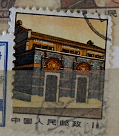
| SOURCE | TITLE| IMAGE MATCH | click to source page |
| eBay | P R China 1971 R14 (1f) Revolutionary Sacred Places MNH O.G. | eBay | 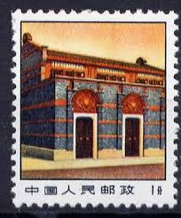 |
| Find Your Stamps Value | People's Hall, Peking - 人民大会堂, 北京52f Multicolored stamp price, value | 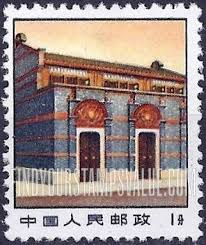 |
| 品得拍 | 029 （普14）革命圣地图案(第三版)普通邮票1分11-8中共一大会址信销票1971年|品得拍—24小时在线拍卖平台 | 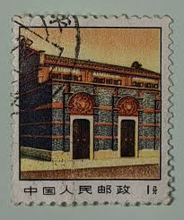 |
| 品得拍 | 083 （普14）革命圣地图案(第三版)普通邮票11-8 中共一大会址1分（1971年）|品得拍—24小时在线拍卖平台 | 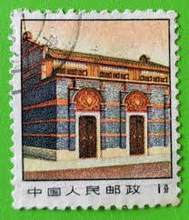 |
| 东方收藏 | 普通邮票普14 革命圣地图案第三版1971年邮票_精品邮票_东方收藏官方网站您身边的收藏投资专家- Powered by ECShop 触屏版 | 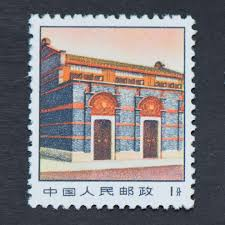 |
| brstamp.com | 普14 革命圣地图案（第三版）普通邮票– 左氏珍藏 | 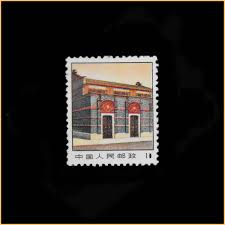 |
| 快懂百科 | 四方联- 抖音百科 | 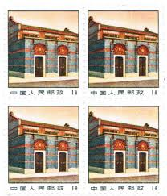 |
| Carousell | China 湖北来凤 early 80s cover to Hong Kong - T29 stamp, Hobbies & Toys, Memorabilia & Collectibles, Stamps & Prints on Carousell | 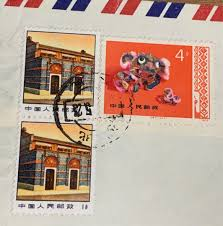 |
| eBay | China (PR) #2056-8, 2204 used | eBay | 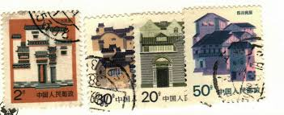 |
| Find Your Stamps Value | Folk Houses: Anhui - 民居: 安徽民居30f Multicolored stamp price, value | 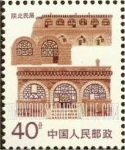 |
| Xabusiness.com | P-A2284 Beijing Qianmen Street and Royal Road Tianjie [N] - China Stamps | 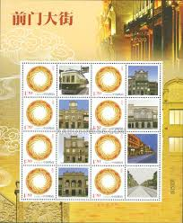 |
| eBay UK | Mint Never Hinged/MNH Architecture Chinese Stamps for sale | eBay UK | 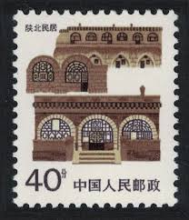 |
| whs (whs2910) - Profile | Pinterest | 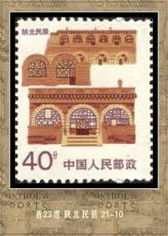 | |
| Chineseposters.net | The Founding of the Chinese Communist Party (1921) | Chinese Posters | Chineseposters.net | 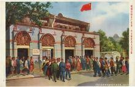 |
| eBay | Hong Kong Scott #361-363 USED Rural Architecture $$ 434961 | eBay | 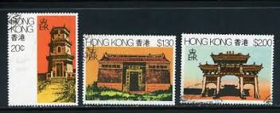 |
| eBay | CHINA 1986-91 CHINESE CIVILIAN DWELLING 21 STAMPS COLLECTION IN BOOKLET MNH | eBay | 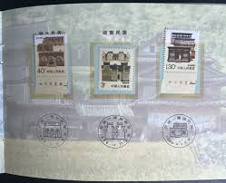 |
| Osta.ee | Hiina " HOONED " 1986/91 (247811752) - Osta.ee | 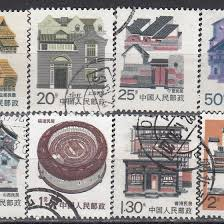 |
| eBay | Paul Temple | eBay | 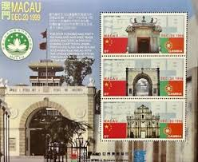 |
| What happened on November 7, 1931 in China? | 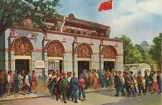 | |
| Stamp Auction Network | Daniel F. Kelleher Auctions, LLC Sale - 627 Page 17 | 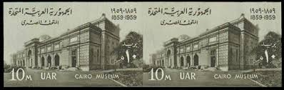 |
| Azur Philatélie | Gambia - 1999 - Nb 2811/2813 - Monuments | 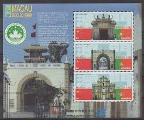 |
| one.bid | China Souvenir Medal "I Have Climbed the Great Wall" - Online auction / Online bidding - Price - OneBid | 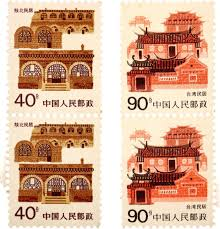 |
| 中華郵政全球資訊網 | The Postal Universal Website of R.O.C ─ Stamp House - Pages | 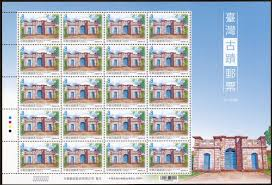 |
| 4StampSales | Mexico - 1999 UPU & World Post Day - 2 Stamp Set - Scott #2166-7 | 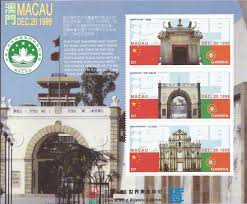 |
| eBay | PRC China, 1991, sc#2339-40, Mint, NH, Blocks of 4, 70th Annv. Hammer & Sickle | eBay | 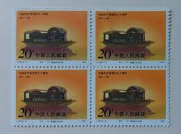 |
| eBay | People's Republic of China Mi.-number.: 2954-2957 FDC 1998 clear brands: Chinese | eBay | 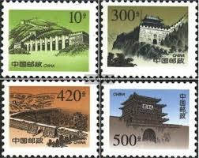 |
| eBay | Mongolia: full set of 4 mint stamps, Ancient Buildings, 1986, Mi#1823-6, MNH | eBay | 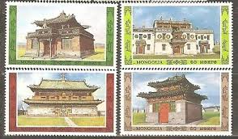 |
| PicClick | MACAU 2026 450TH Catholic Diocese of Macau stamps $3.99 - PicClick | 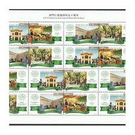 |
| AliExpress | 2016-24 , Xuan Zang , Souvenir Sheet . Miniature sheet . Post Stamps , Philately , Collection - AliExpress | 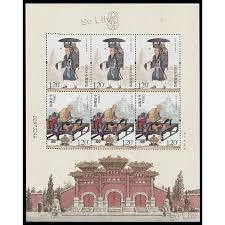 |
| eBay | 876167) Buildings, Library, Macao | eBay | 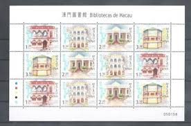 |
| eBay | EDSROOM-18705 Hong Kong 361-363 MNH 1980 Complete Architecture | eBay | 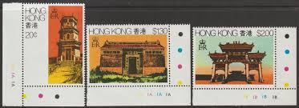 |
| Find Your Stamps Value | Great Wall: Huangyaguan - 万里长城: 黄崖关30f Yellow & black stamp price, value | 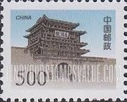 |
| eBay | 4 China Mao period memorial of the first national congress photos | eBay | 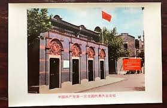 |
| Poppe Stamps | Poppe Stamps: China (Communist), 1986, 3444, Houses - stamps for sale by theme and country | 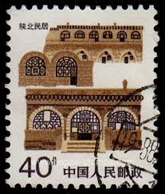 |
| eBay | China Macau 2005 Mini S/S Library stamp set | eBay | 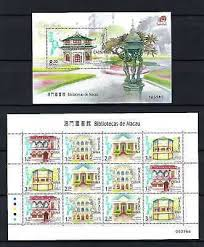 |
| 中華郵政全球資訊網 | The Postal Universal Website of R.O.C ─ Stamp House - Pages | 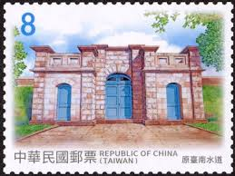 |
| eBay UK | Good (G) Machine Cancel Chinese Stamps for sale | eBay UK | 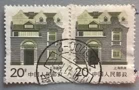 |
| Colnect | Stamp: Summer Palace - Marble Boat (China, People's Republic(Summer Palace) Mi:CN 3963,Sn:CN 3669,Yt:CN 4545,Sg:CN 5270,WAD:CN031.2008 📮 | 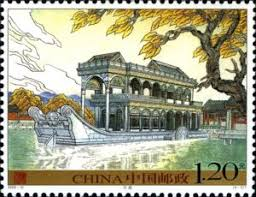 |
| Free stamp catalogue | Stamps from Hong Kong - Freestampcatalogue.com - The free online stampcatalogue with over 500.000 stamps listed. | 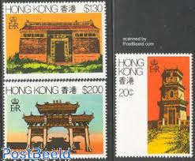 |
| eBay | Hong Kong 1980 Rural Architecture Gutter pairs SG 387-390 Sc 361-363 MNH | eBay | 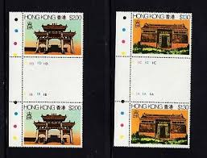 |
| eBay | Hong Kong SAR Architecture Stamps 1997-Now for sale | eBay | 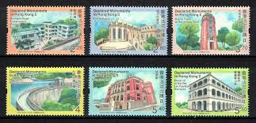 |
| Pinkoi | Taiwan Stickers df Taiwan's old post office postcardtaiwan - Pinkoi | 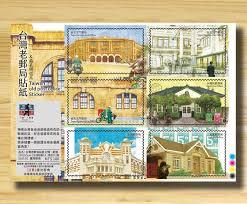 |
| Free stamp catalogue | Stamps from the year 1964 - Freestampcatalogue.com - The free online stampcatalogue with over 500.000 stamps listed. | 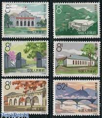 |
| eBay UK | 3 Number Postage Chinese Stamps for sale | eBay UK | 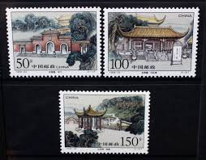 |
| eBay | Japan Pre WWII postcard Military Post China Occupation Nanking Railroad 1930's | eBay | 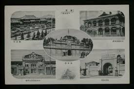 |
| eBay | LIEBIG TRADE CARDS, CHINA II 1901 Set of 6 Cards (S660 French). | eBay | 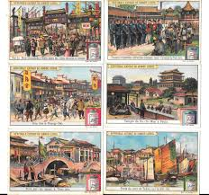 |
| China stamp | 2003-19 Scott 3309-10 The Art Books (Jointly Issued by China and Hungary) - China Stamps | 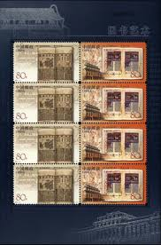 |
| eBay | PRC. 2051. R23-2. 2f. Northeast, Folk House. Perf A. Imprint Margin Block of 4 | eBay | 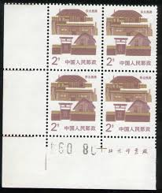 |
| eBay | PR China 1986, Sc#2054, Block of 6, MNH VF | eBay | 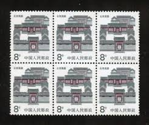 |
| eBay | Macau 2005 - Mi-Nr. 1282-1285 ** - MNH - Bibliotheken | eBay | |
| Shutterstock | China Circa 1957 Stamp Printed China Stock Photo 40257172 | Shutterstock | |
| PicClick | CHINA ZHEJIANG TRADITIONAL Folk House 1y.10 1986 MNH SG#3448 $1.79 - PicClick | |
| eBay | CHINA PRC Regular issued stamps lot (Mint/Used mix) | eBay | |
| Mystic Stamp | 1551-54 - 1986 Mongolia - Mystic Stamp Company | |
| Blogger.com | SeeMacauNow: Macau Stamps 2005 | |
| Find Your Stamps Value | Historic Structures in Taiwan: North Gate, Taipei City Wall - 台湾古迹: 台北府城北门80f Multicolored stamp price, value | |
| studyfunda.in | USSR Set of 24 Postcards | |
| Find Your Stamps Value | Millennium: Stamp #2730 - 20世纪回顾: 改革开放: 邮票#2730 260f Multicolored stamp price, value | |
| HipStamp | China PRC 1986 R23 Folk House Definitive Stamps Series I Set of 14 MNH | Asia - China, General Issue Stamp / HipStamp |